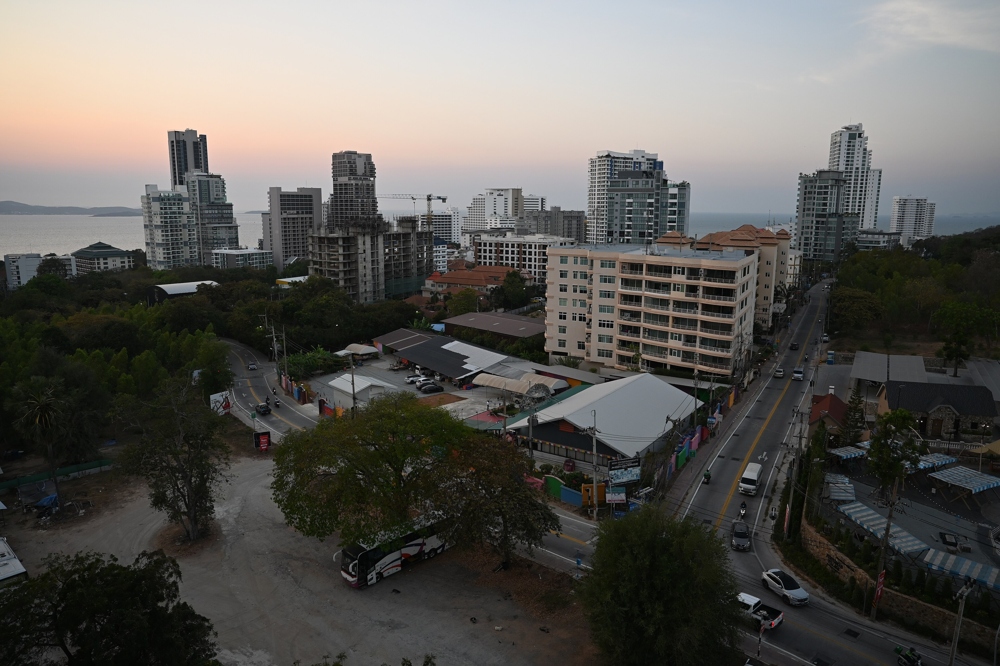
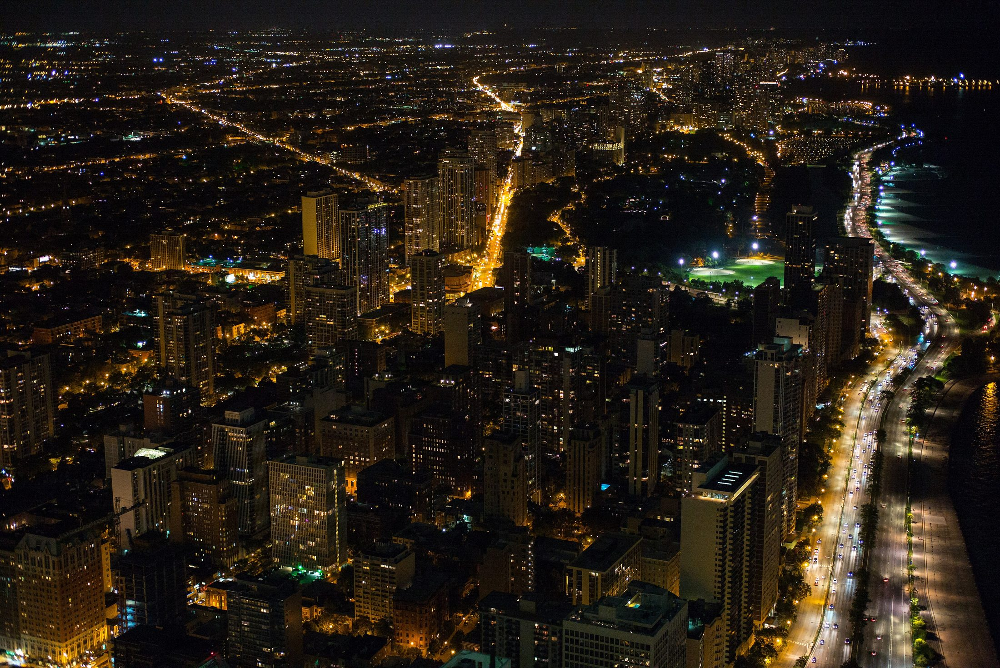
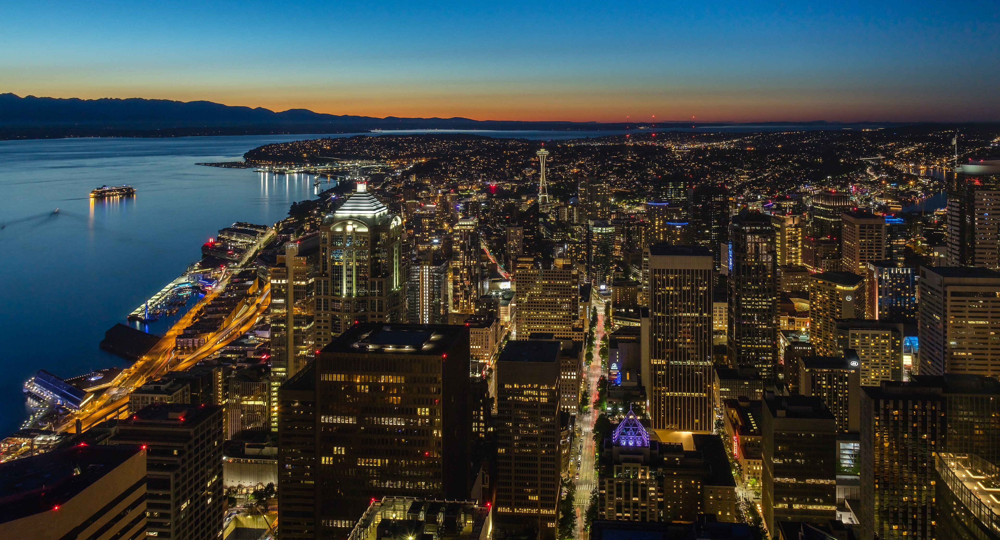

Layer 01 · Vertical
Skyline
The city you see first is the one that never existed.
Scroll
01
Vertical
Towers built
from promises
Every skyline is a graph of what a city believed about itself. The tallest lines are the loudest beliefs. Scroll and watch them thin out into the streets where people actually live.
Photo · Unsplash
Vertical


02
Glass
Windows that only
face inward
A million lit rectangles, each one a life pretending not to be watched. The Im-Possible City is made of these: glances that never meet, floors that never touch the ground.
Photo · Unsplash
03
Weather
Clouds rented
by the hour
Above the 90th floor the fog is a subscription. Below it, the rain still falls for free. This is the first contradiction. There are five more layers beneath you.
Photo · Lerone Pieters
A skyline is a sentence the city keeps rewriting.Layer one, Skyline